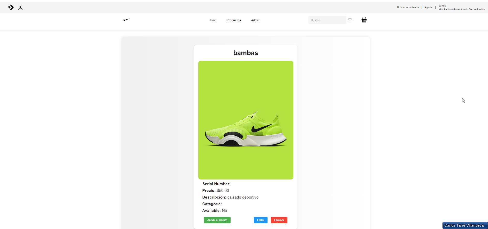
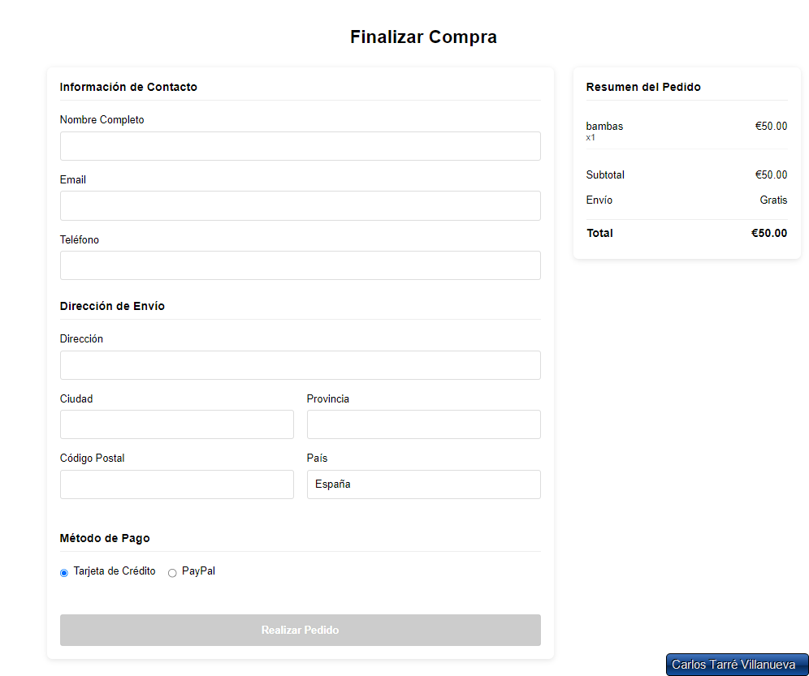
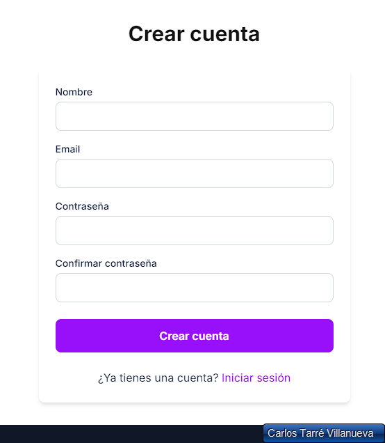
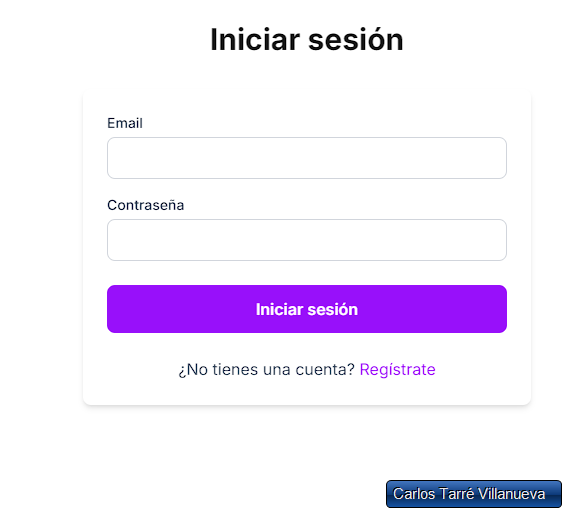
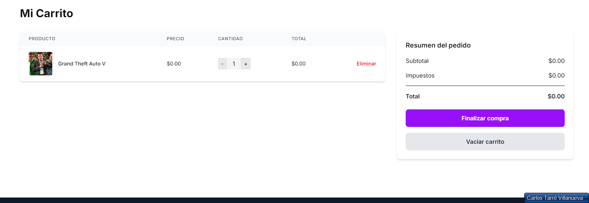
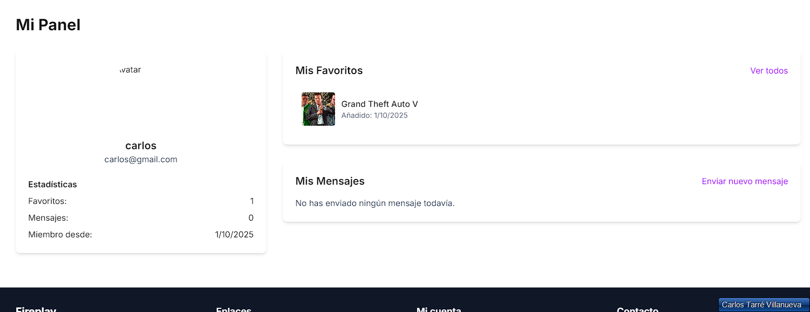
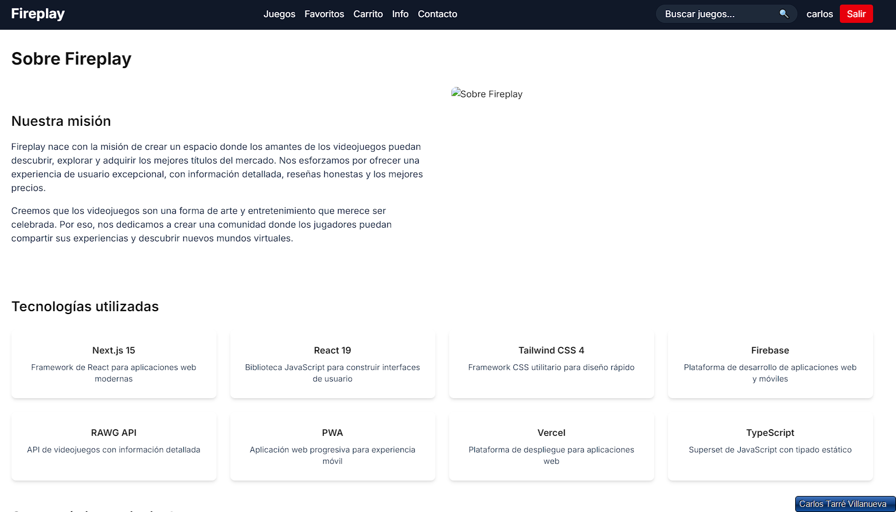
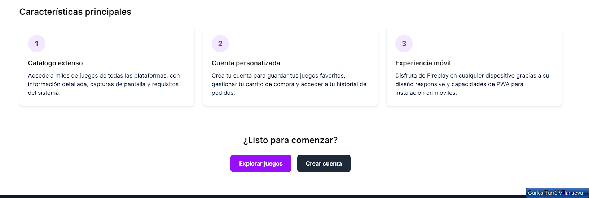
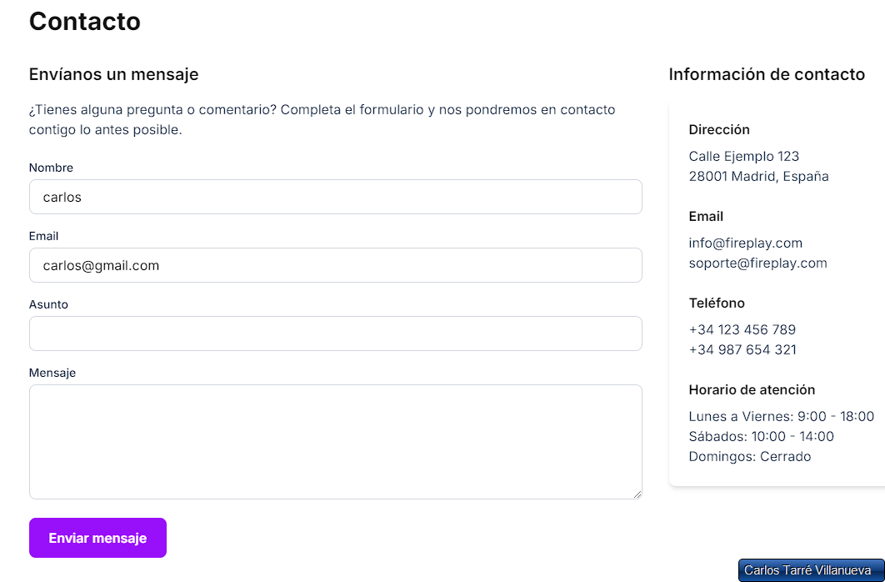

Me llamo Carlos Tarré Villanueva, Técnico en Desarrollo de Aplicaciones Web con experiencia en programación, bases de datos y entornos tanto del lado del cliente como del servidor. Destaco por desarrollar aplicaciones bien estructuradas, aplicando buenas prácticas y metodologías ágiles para garantizar calidad y mantenibilidad.
Conocimientos en HTML, CSS, JavaScript, Java, Python y MySQL, además de experiencia en frameworks y herramientas como React, Bootstrap, Laravel y Git. Manejo con soltura Windows y Linux, y entornos de desarrollo como Visual Studio Code.
Me caracterizo por el compromiso, la responsabilidad y la atención al detalle. La capacidad de trabajo en equipo, la comunicación efectiva y la resolución de problemas me permiten integrarme con facilidad en proyectos colaborativos y afrontar nuevos retos con una actitud proactiva.
El objetivo es seguir creciendo como desarrollador web, creando soluciones innovadoras y de alto impacto que contribuyan al éxito de cada iniciativa en la que participo.
Sitio web inspirado en la marca Nike, desarrollado como práctica de frontend y backend completo. Incluye un diseño moderno, secciones interactivas y un sistema responsivo que se adapta a diferentes dispositivos. Además, cuenta con funcionalidades de usuario y administrador, carrito de compras y gestión de pedidos.
git clone https://github.com/Carlostarre/NikeCypress.gitpixar-web): npm install y npm install -g @angular/cli si no tienes Angular CLI.backend): npm installCREATE DATABASE nike_store;
USE nike_store;
-- Tabla de usuarios
CREATE TABLE users (
id INT AUTO_INCREMENT PRIMARY KEY,
name VARCHAR(100) NOT NULL,
email VARCHAR(100) NOT NULL UNIQUE,
password VARCHAR(255) NOT NULL,
isAdmin BOOLEAN DEFAULT 0,
createdAt TIMESTAMP DEFAULT CURRENT_TIMESTAMP
);
-- Tabla de productos
CREATE TABLE products (
id INT AUTO_INCREMENT PRIMARY KEY,
name VARCHAR(255) NOT NULL,
description TEXT,
price DECIMAL(10,2) NOT NULL,
stock INT DEFAULT 0,
image VARCHAR(255),
createdAt TIMESTAMP DEFAULT CURRENT_TIMESTAMP
);
-- Tabla carrito
CREATE TABLE cart (
id INT AUTO_INCREMENT PRIMARY KEY,
userId INT NOT NULL,
productId INT NOT NULL,
quantity INT DEFAULT 1,
FOREIGN KEY (userId) REFERENCES users(id) ON DELETE CASCADE,
FOREIGN KEY (productId) REFERENCES products(id) ON DELETE CASCADE
);
-- Tabla órdenes
CREATE TABLE orders (
id INT AUTO_INCREMENT PRIMARY KEY,
userId INT NOT NULL,
status VARCHAR(50) DEFAULT 'Pending',
createdAt TIMESTAMP DEFAULT CURRENT_TIMESTAMP,
FOREIGN KEY (userId) REFERENCES users(id)
);
-- Tabla items de órdenes
CREATE TABLE order_items (
id INT AUTO_INCREMENT PRIMARY KEY,
orderId INT NOT NULL,
productId INT NOT NULL,
quantity INT DEFAULT 1,
FOREIGN KEY (orderId) REFERENCES orders(id) ON DELETE CASCADE,
FOREIGN KEY (productId) REFERENCES products(id) ON DELETE CASCADE
);
npm start en la carpeta backend. Servidor disponible en http://localhost:3000.ng serve en la carpeta pixar-web. Abrir http://localhost:4200 en el navegador.UPDATE users SET isAdmin = 1 WHERE email = 'tu-email@example.com';





Plataforma web de exploración y gestión de videojuegos con autenticación, favoritos, carrito de juegos y datos del usuario integrados. Diseño moderno, responsive y dinámico, utilizando Firebase y la RAWG API.
git clone https://github.com/TU_USUARIO/FireplayGames.gitnpm install.env.local con Firebase y RAWG APInpm run dev. La app estará disponible en http://localhost:3000








Desarrollo de interfaces web modernas, responsivas y accesibles.
Desarrollo backend eficiente y gestión de bases de datos estructuradas.
Programación orientada a objetos y aplicaciones escalables y robustas.
Implementación de interfaces dinámicas y reutilizables con buenas prácticas.
Control de versiones eficiente y colaboración en proyectos de desarrollo.
Desarrollo de scripts, automatización y aplicaciones backend robustas.